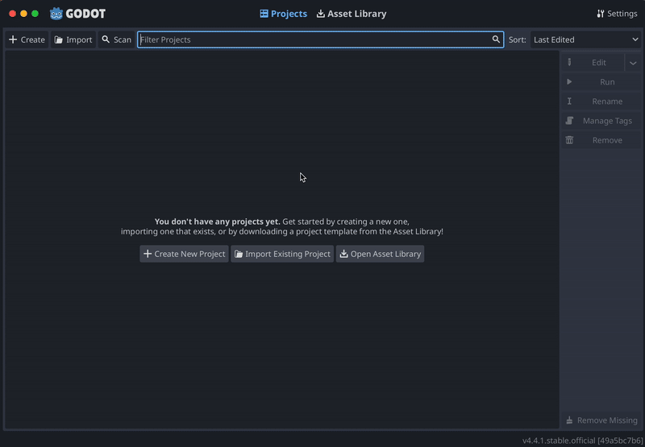
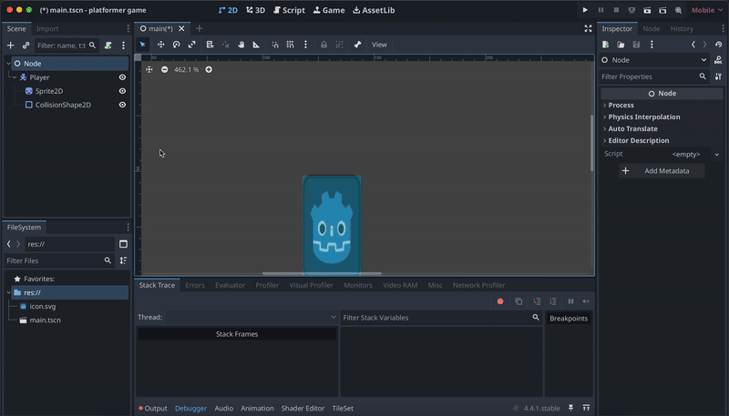
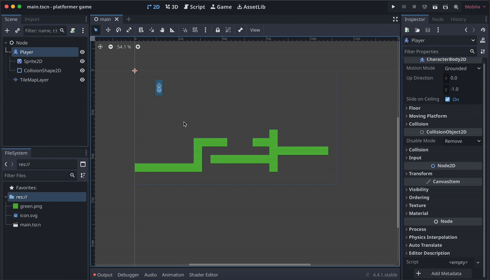

Godot is a free, open source game engine that you will be using to make your game. It's very easy to learn as a beginner!
Godot_v4.4.1-stable_win64.exe.zipctrl + c to copy the file, make sure you are copying only the zip file Click it and type C:/ and hit enter, you'll be taken to the C-Drive:
In here make a new folder called Barracoders
Then Paste the Zip file you copied earlier into here and hit Extract All at the top:
After that it should open Un-Zipped and you should be good to go!
C:/ drive and not in any other directory.Click the Create New Project Button, and name your platformer. Create a new folder that will have all your future Godot games. Use the Mobile renderer. Finally, click Create at the bottom.
Setup Godot Hackatime. Follow this guide. (VERY IMPORTANT!)
addons/godot_super-wakatime folder to your project's addons directoryOnce configured, your game development time will automatically appear on your Hackatime dashboard. Happy game developing!
Plugin created by Bartosz (BudzioT), a Hack Clubber, and officially approved for High Seas!
Once you make one, remember to make frequent commits to your repo as you work on your game!
In Scene section in the top left, you will see the options to create a root node, which is the starting point for your section. Nodes are game components like the player, the map, and the camera. All the other components will be in the main Node. Choose Other Node and select the general Node.
Save the scene, and call it main.tscn. You will see it show up in the FileSystem below the Scene area. Later in your project, you will use this area to find different scenes, scripts, and 25-assets.
In the top bar, change to 2D view instead of 3D view. The faint purple-outlined rectangle near the center is the view of the game. Click CTRL-A or use the plus button to create a new node, CharacterBody2D. Name it Player.
Sprite2D is a node that displays textures (images). Create a Sprite2D node under Player. On the right bar, you will see the Texture and that it is empty. In the FileSystem, there is icon.svg of the Godot logo. Drag it to the texture box. Then you can resize it however you want.
Add a CollisionShape2D to the Player. Select Rectangle for the shape in the Inspector on the right. Resize the blue box to cover the player. This will help with the player's physics, so it knows where to collide with the ground or other objects later on.
Tilemaps are used to easily make grid-based 2D maps. Add a TileMapLayer node under Player. Go to the Inspector and select New Tilset in the Tile Set option. Then on the bottom bar, navigate to TileSet (not TileMap!). Import a image to the FileSystem, then drag it into TileSet. Select Yes to modifications. It splits the image into tiles.
Just like the player, each block of the map needs a collision box too. Open TileSet in the Inspector and under Physics Layers, Add Element. Then in the TileSet in the bottom area, change to Paint and select Physics Layer 0 as the Paint Property. Finally, select all of the squares.
In TileMap, use the pencil tool and select one cube. Then you can draw a map in the purple rectangle in the main view. You can also adjust the size in Transform and Scale.
To make it so the player can jump and walk around, you need to code a script for the player. Select the player, then click the scroll with a green plus above to create a script. Choose GDScript (the language Godot uses), check template and choose CharacterBody2D: Basic Movement, and then create the script.
Godot does come with a template for player movement, but there are many ways to make the movement and code better. First, you should understand the template code. Look at the photo below and read through why each of the lines of codes works!
In the template code, keys are with ui_accept, left, and right. These are not very adjustable, so using input map is a good idea. Go to Project in the top bar, Project Settings, Input Map,
Now, replace the ui controls in the code with the new input map. For example, replace ui_accept with jump. Then, replace the left and right with the new input map.
The current code works, but you can make lots of changes to make it better. For exmaple, on line 19 where the slowing down of the player is controlled, it is very sudden. You can change the last value (which says SPEED) with other numbers to make the player slide more.
Also, in Project, Project Settings, General, and 2D Gravity, you can adjust the gravity to be higher. Finally, you can adjust the SPEED and JUMP_VELOCITY to however you want. Remember, the lower jump velocity, the higher the jump. Press ctrl+b or use the play button in the top right to run your game and see the changes.
To make the camera follow the player, you need to add a camera. Add a Camera2D node under Player. You need to make sure it is centered around the player, so switch to 2D view in the top and drag the camera's center to the player. Finally, you can add a little bit of camera lag for a cool effect by going to the Inspector, and under Position Smoothing, enable it and set to the speed to around 7. The lower the speed, the more camera lag there is.
Click ctrl+b or use the play button in the top right to start the program. Set the default scene to main. Congrats!! You now have a platformer game!
{kind=link}